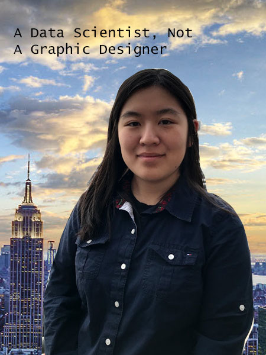

 I’m an Information Management and Technology major with a concentration in data science. Drawing analysis and forecasts from pre-existing data in order to come to new conclusions is something that I enjoy doing. I really like organizing and coding databases in Sequel.
Personal info
In my spare time I like playing video games. Here are some of my favorites.
- Kirby's Epic Yarn
- Super Smash Brothers
- Super Monkey Ball Banana Blitz For The Nintendo Wii